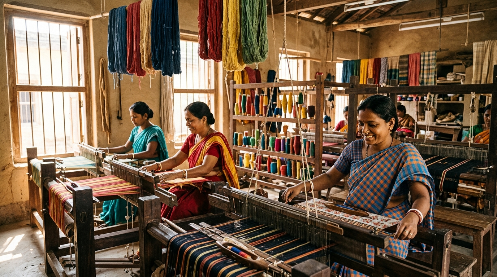
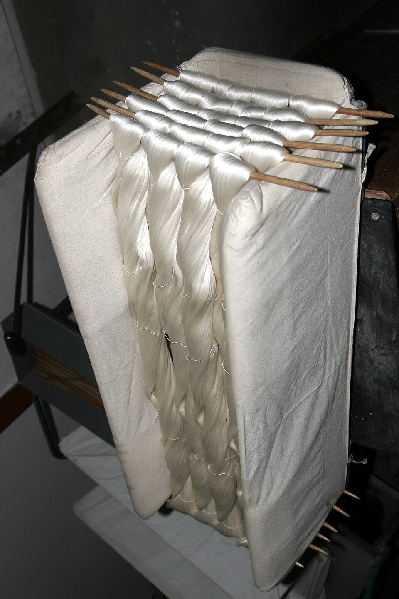
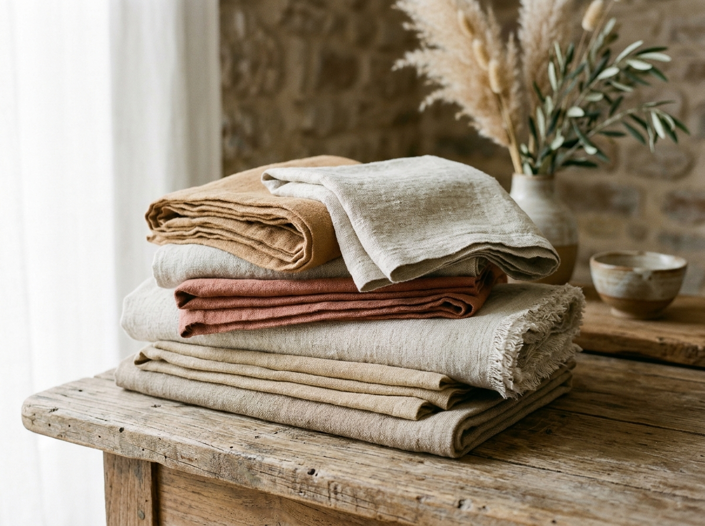

Every metre carries a story — hand-spun yarn, botanical dyes and the patient hands of master artisans. Discover textiles made to last for generations.



Meet the artisans keeping our traditions alive.

With over 30 years of experience, Kamala specializes in intricate silk sarees, passing down her knowledge to the younger generation.

Raju comes from a family of cotton weavers. His dedication to sustainable and organic dyes has revolutionized our cotton collection.

Lakshmi's vibrant patterns tell stories of her village. Every piece she weaves is a unique masterpiece of cultural expression.
Every product is handwoven with care, preserving traditional techniques and authentic quality.
We ensure our weavers receive fair wages, safe working conditions, and respect for their craft.
Using natural fibers and eco-friendly dyes, our process is kind to both the weavers and the earth.
Our most loved fabric categories



From yarn to fabric, everything is done by hand.
Raw cotton or silk is carefully hand-spun into fine yarn, ensuring strength and natural texture.
The yarn is naturally dyed using plant-based extracts, creating vibrant and eco-friendly colors.
Master artisans use traditional wooden looms to meticulously weave the yarn into beautiful fabrics.
"The quality of the silk is unmatched. You can truly feel the love and dedication poured into every thread."
"I love knowing that my purchase directly supports these talented weavers. The organic cotton is so breathable!"
"Fast shipping and incredible craftsmanship. The intricate patterns on the Ikat fabric are absolutely stunning."
Subscribe to our newsletter for the latest collections and weaver stories.